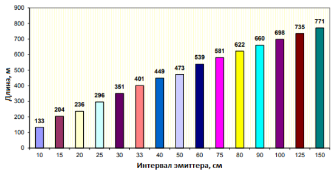

Продукция
Эмиттерная капельная лента
0,64 л/ч
Диаметр: 16.1 мм
Толщина стенки: 0.15-0.25 мм (6-10 милс)
Шаг капельниц: 10, 20, 30, 40, 50 см
Рабочее давление: 0.5 - 1 бар
Длина катушки: 2030; 3030 м
Норма вылива одной капельницы: 0.64 л/ч
Максимальная рекомендуемая длина капельной ленты (м) При равномерности полива – 90%, давлении – 1,0 бар, уклоне – 0%. ⌀ 16,1 мм – 0,64 л/ч
Эмиттерная капельная лента
1,0 л/ч
Диаметр: 16.1 мм
Толщина стенки: 0.15-0.25 мм (6-10 милс)
Шаг капельниц: 10, 20, 30, 40, 50 см
Рабочее давление: 0.5 - 1 бар
Длина катушки: 2030; 3030 м
Норма вылива одной капельницы: 1,0 л/ч
Максимальная рекомендуемая длина капельной ленты (м) При равномерности полива – 90%, давлении – 1,0 бар, уклоне – 0%. ⌀ 16,1 мм – 0,64 л/ч
Эмиттерная капельная лента
1,6 л/час
Диаметр: 16.1 мм
Толщина стенки: 0.15-0.25 мм (6-10 мил)
Шаг капельниц: 10, 20, 30, 40, 50 см
Рабочее давление: 0.51 бар
Длина катушки: 2030; 3030 м
Норма вылива одной капельницы: 1,6 л/час
Максимальная рекомендуемая длина капельной ленты (м) При равномерности полива – 90%, давлении – 1,0 бар, уклоне – 0%. ⌀ 16,1 мм – 0,64 л/ч
Трубка капельного полива
с эмиттером Sandguard
Диаметр: 16, 20 мм
Толщина стенки: 0,5-1,2 мм
Рабочее давление: до 4 бар
Длина бухты: 100 - 500 м
Вылив: 2/4 литра
— Равномерность вылива и способность снижать потери давления на длинных участках трубки
— Равномерность потока на выходе капельницы. Значение параметра CV < 3%
— Устойчивость трубки к искривлениям, ультрафиолетовому излучению и воздействию удобрений
Трубка капельного полива
с эмиттером Monsoon
Диаметр: 16, 20 мм
Толщина стенки: 0,5-1,2 мм
Рабочее давление: до 4 бар
Длина бухты: 100 - 500 м
Вылив: 2/4 литра
— Возможность делать удобные боковые ответвления
— Одинаковую скорость вылива при перепадах давления за счет автоматической регулировки
— Устойчивость трубки к искривлениям, ультрафиолетовому излучению и воздействию удобрений
Трубка капельного полива
с эмиттером Storm-PC
Диаметр: 16, 20 мм
Толщина стенки: 0,8 мм
Рабочее давление: до 4 бар
Длина бухты: 100 - 500 м
Вылив: 2/4 литра
— Высокая устойчивость к засорению. Благодаря внутреннему поднятому фильтру в каждом эмиттере
— Равномерность потока на выходе капельницы. Значение параметра CV < 5%
— Устойчивость трубки к искривлениям, ультрафиолетовому излучению и воздействию удобрений
Оставьте заявку

Контакты
Воронежская область, с. Бабяково
agro-polimer@npoapr.ru+7 (989) 625 60 40+7 (910) 244 39 39+7 (920) 468 68 64